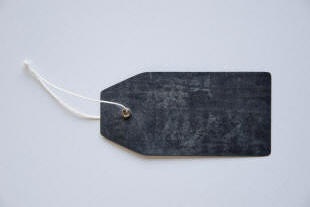

The Bridge: Nouns
|  |
| Labels for things |
Many guides in The Bridge consider issues which are not mentioned
(much, anyway) on initial training courses because they are considered a
bit too theoretical or too complex to be covered properly on short,
introductory courses.
Nouns are an exception because many courses avoid dwelling on their
properties in the mistaken idea that the category is so obviously
simple that it doesn't need teaching.
Nouns are, in fact, not as simple as many believe and there is a much
fuller in-service guide to the area, linked below.
Here we will consider only:
- How nouns may be classified
In other words, what you need to tell learners about a noun when they discover it for the first time. - What nouns do
In other words, how the syntax of English deals with nouns and the functions they perform in sentences.
 |
Classifying nouns |
If your school education covered any language analysis at all, you were probably taught that nouns can be divided into:
- Common nouns
such as pepper, person, park, pen, picture - Collective nouns
Such as crew, army, government, class, family - Proper nouns
such as James, Jamaica, the Queen, Mr President
While such a classification has its uses, it is functionally limited when teaching English as a foreign or second language because it tells us nothing useful about how to make acceptable syntax using nouns.
For our purposes, we need to look at a classification which reveals something about how nouns work with the rest of the language. This classification is:
- Count nouns
such as pen, keyboard, mouse, screen, disc, microphone - Mass nouns
such as paper, ink, tea, sugar, nicotine, information - Proper nouns
such as Google, Lake Geneva, the Alps, Manchester, Germany - Collective nouns
such as crew, majority, committee, jury, team
 |
As an
introductory task, try to match the noun with its type. |
That wasn't quite as easy as it looked because the categories are not completely watertight. More to come about this.
We'll take them one at a time and briefly consider their characteristics. There is more detail, naturally, in the in-service guide to the area, linked below.
 |
Count nouns |
Almost all the nouns in any language fall into this category.
If you don't tell learners that the noun they have encountered is a
regular count noun, they will almost certainly presume that it is.
These nouns share characteristics:
- They usually have plural forms which are overwhelmingly regular
but they all have plural senses.
mouse / mice, dog / dogs, tray / trays, try / tries, sheep / sheep, child / children - They cannot usually be used in the singular without a
determiner:
the car is outside
*car is outside
cars are expensive here - They are, as the name suggest, countable, and take singular or
plural verb forms.
one book is
eighty books are
one sheep eats
twenty sheep eat
The category includes:
- Physical entities (sometimes referred to as concrete nouns),
such as
friend, computer, socket, insect, apple, mat - Abstract concepts (some of which are debatably fully abstract in
the sense that they can be perceived with at least one sense
although they cannot usually be touched, smelt or tasted) such as
event, accident, position, tune, coincidence, smile
Within this category there are some irregularities, most of which stem from older or foreign uses of nouns.
- irregular plural forms:
mice, feet, oxen, graffiti, realia - zero plural forms
deer, trout, sheep - plural-only forms (with and without plural markers)
vermin, cattle, binoculars
 |
Mass nouns |
This is, in English, a very large category and some languages have either very few mass nouns or none at all. The term mass noun is used here because uncountable, the term often used on initial training courses and in classrooms, is inaccurate and misleading, as we shall shortly see.
The shared characteristics are:
- They do not have plural forms when they are used in the sense of
a mass. So we allow, e.g.:
The furniture is in place
but not
*The furnitures are in place - They cannot usually be used with a singular indefinite article:
*a dough
*a bread
*a money
but there are some exceptions to this rule (see the in-service guide). - They can only be used in the singular and take singular verb
forms:
sugar is
*sugar are
*money are
money is
The category includes:
- abstract qualities:
anger, happiness, significance - substances:
silver, iron, water, alcohol - nouns formed from
verbs:
training, teaching, running
(There are many nouns derived from verbs which are countable such as killing, furnishing, greeting, shooting, reading, painting etc., and not all nouns which end in -ing are derived directly from verbs such as outing, thing, stocking, fining, piling, ceiling etc.) - most infectious diseases
malaria, flu, pox
All mass nouns may be made into or used as count nouns. Usually in three ways:
- When a partitive is used:
three cups of coffee
two panes of glass
fifteen rashers of bacon
two bits of information
some pieces of furniture - When the partitive is implied:
three coffees
four beers
one sugar - In special senses:
the wines of France
the waters of the Atlantic
Collective nouns |
This is a small group.
The shared characteristics are:
- They have plural and singular forms just like count nouns (of
which they are arguably a subset)
three packs
two teams - In British English they can be used with singular or plural verb
forms (when they are considered either as a number of individuals or
a single entity). In US English and allied varieties, they are
almost always singular:
the team have arrived
the crew rows together
the jury were divided
the jury was unanimous
In most languages, the singular form is always used. - There are some odd, and probably irrelevant, items better
referred to as assemblage nouns which almost always
are followed by the of-construction such as:
a pod of dolphins
a murder of crows
Other assemblage nouns are, in fact, more common (and more useful), such as:
a company of actor
team of players
a bunch of keys
an army of ants
These assemblage terms are almost always used with the of ... formulation unless the context makes it quite clear what kind of entities are being represented.
The category includes:
- People and animals:
jury, team, pack, group, squad, crowd - Inanimate objects:
clump, nest, pile, hill, field
 |
Proper nouns |
This is another minor area but one fraught with irregularities.
For more, see the in-service guide.
The category includes:
- People and positions:
The President, The Dali Lama, Aunt Mary, Smith - Places:
Britain, Berlin, The Alhambra, Lake Michigan - Institutions
Harvard, Eton School, The Department of Energy
Irregularities include in particular the (non-)use of articles:
Germany, The Netherlands, Russia, The Emirates,
The Himalayas, St Paul's, The British Museum
and so on. The in-service guide has more on this.
 |
Markedness |
There is a guide in the in-service section to this important area.
Here we are only concerned with noun marking.
It happens in three ways:
- Number
- Apart from mass uses of nouns, English usually marks number.
Regular marking is with -s or -es but there are a
few irregularities with words borrowed from other languages or
left-over parts of older forms of English.
So we have:
people, guns, children, socks, matches - Size
- English rarely uses diminutives but they are always the marked
forms. So we have:
booklet, codling, kitchenette, hillock - Sex
- Although marking for sex is becoming unfashionable and thus:
actress, manageress, hostess
and many more are disparaged, some marking for sex remains:
brother / sister, duke / duchess, lion / lioness, husband / wife, bride / groom
For a fuller consideration of markedness in nouns, see the guide and for markedness in general there is also a link below.
 |
Grammatical functions of nouns |
If you were paying attention on an initial training course, you'll be aware that nouns and nouns phrases can function as:
- The subject of a verb:
The jury decided on their verdict - The object of a verb:
He sent the jury out to think again
They can, however, do a bit more than that and it is worth alerting your learners to the function of a noun in these circumstances, too:
- As a subject complement which is co-referential with
the subject:
He is the Prime Minister - As an object complement which is co-referential with the object:
They elected him chair of the meeting - As an indirect object:
They gave the dog a bone - In apposition, referring to the same entity:
Speak to Mr Jones, the manager - As the complement (or object, if you prefer) of a preposition:
He waited on the platform - As an addressee:
This group, listen to me. - As a classifier:
He spent time in the town square
|
|
Try a final test on this to see if you need to re-read this section. |

| Guides in other areas | |
| Initial plus essential guides | In-service guides |
| noun essentials | nouns |
| word class essentials | markedness |